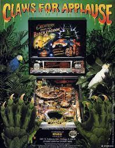

Neon lights. Silver ball. Arcade energy.
Pinball is one of the most exciting arcade games because it combines bright visuals, fast motion, timing, and strategy. Even though it can look random, skilled players learn how to control the ball and aim for key shots.
This page is about my interest in pinball, the way machines are designed, and why the game takes more skill than many people realize.

Replace your-pinball-photo.jpg with your own photo file name.
Watch this video about how pinball is more skill-based than it first appears.
This live Tableau visualization explores pinball in the United States using data from public pinball machine locations.